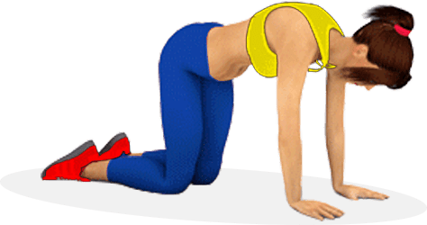

There is only one way to lose weight and that is by creating a
calorie deficit. Calorie deficit happens when you consume less calories than what is
required by your body. In order to fully understand calorie deficit you have to be aware
of your daily calorie requirement which varies based on your gender,age,weight and height.
BMR or Basal Metabolic Rate is widely used metric to find the number of calories required
to keep your body functioning at rest (Find your BMR using our BMR calculator in the Tools
Section). BMR plus any additional physical activity like running, strength training or
swimming will determine the total calories required to maintain your body weight. Any calories
intake below the daily calories requirement will result in weight loss. So in addition to keeping
an eye out for your daily calories requirement, you will also be need to be mindful of the amount
of calories intake during the day.